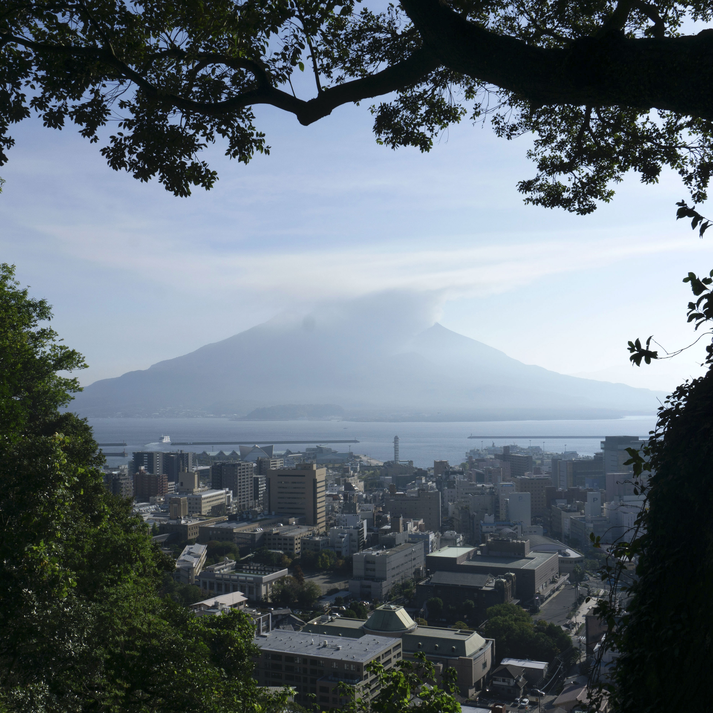
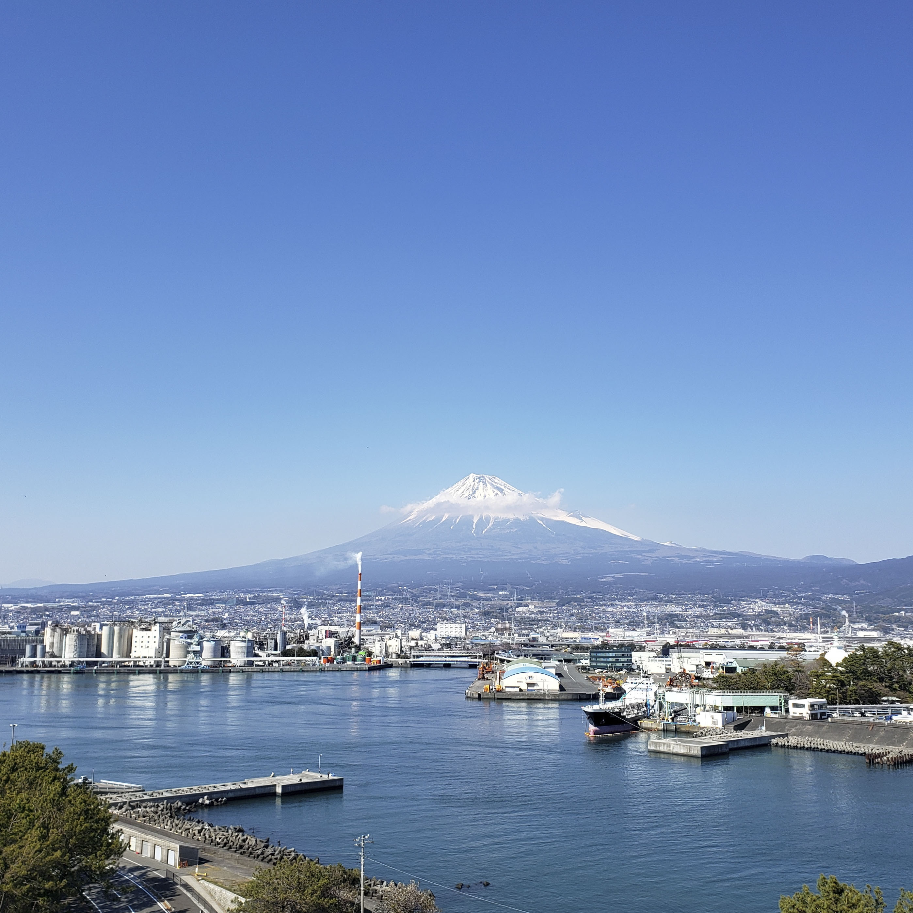
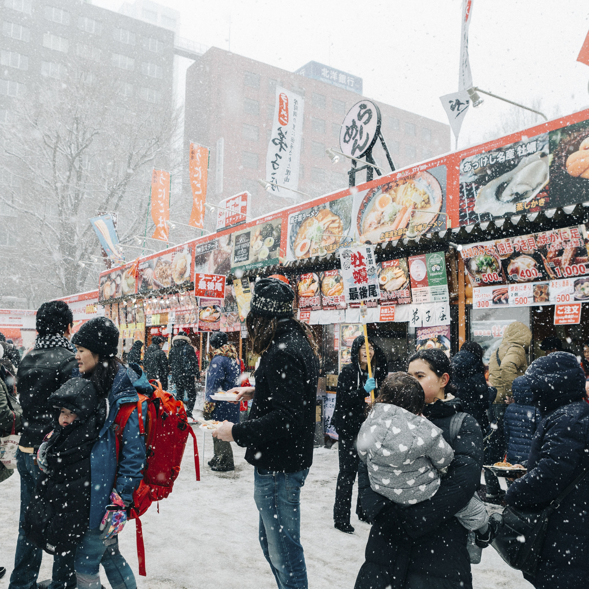
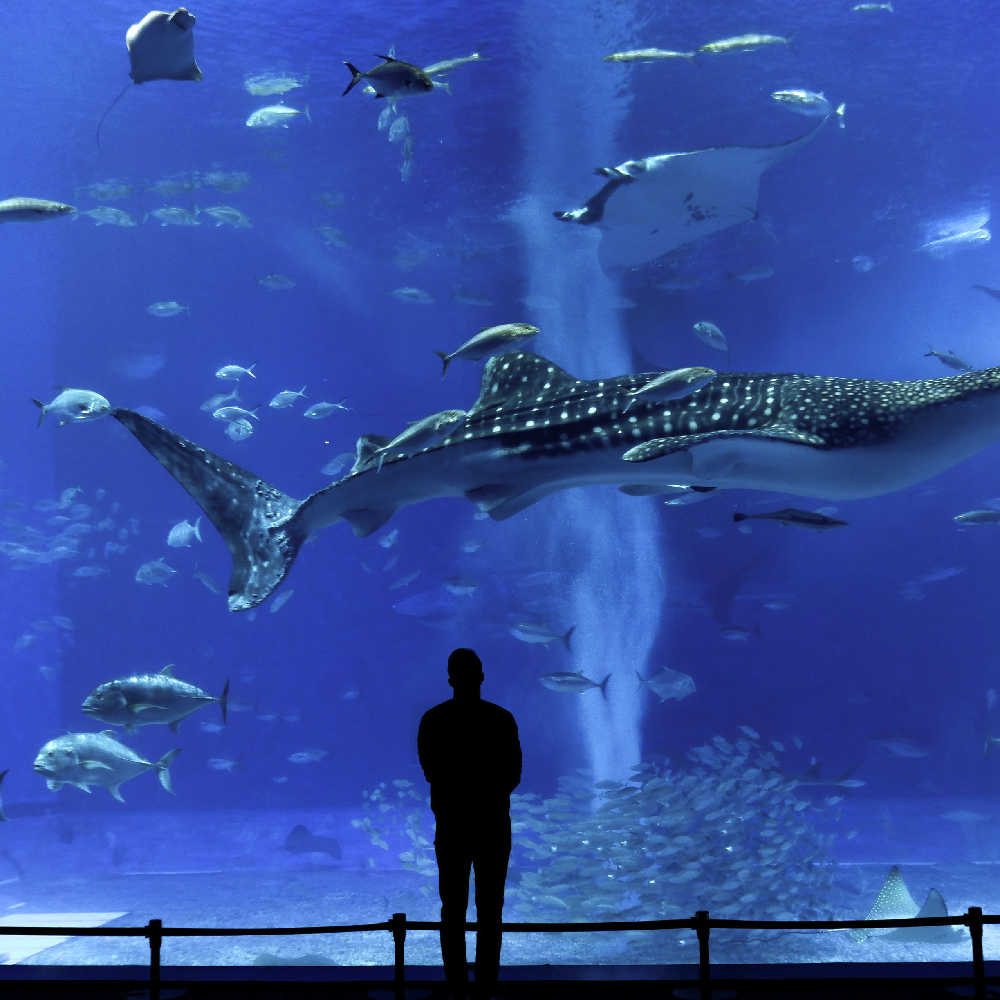

Sightseeing
SOUTHERN JAPAN

For lovers of seafood and fried food, Takoyaki is the perfect snack. Traditionally top...
Conbinis, or convenice stores, are one of the things I miss most from Japan. So c...
CENTRAL JAPAN

Japanese food courts are next level. You can get delicious meals for well under ten d...
Casual family restaurants are super common in Japan. Here are 5 places you can...
NORTHERN JAPAN

For lovers of seafood and fried food, Takoyaki is the perfect snack. Traditionally top...

Conbinis, or convenice stores, are one of the things I miss most from Japan. So c...
OKINAWA

Japanese food courts are next level. You can get delicious meals for well under ten d...
Casual family restaurants are super common in Japan. Here are 5 places you can...